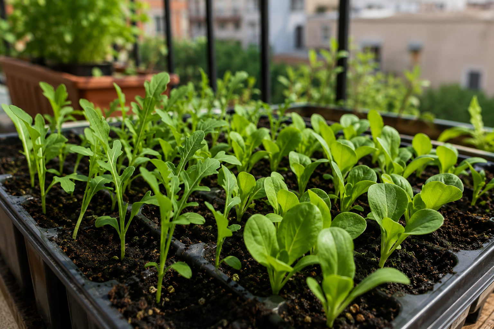

Septiembre es, para muchos hortelanos urbanos, el mejor mes del año. El calor extremo del verano ya ha pasado, las noches empiezan a refrescar y la mayoría de hortalizas de hoja, raíces y aromáticas encuentran aquí su momento ideal de siembra. Si en julio y agosto tuviste que pelear contra el calor para que germinara algo, en septiembre el huerto te lo pone fácil.
Esto es justo lo contrario a lo que mucha gente piensa: septiembre no es "el mes de recoger lo último del verano", es uno de los mejores momentos para sembrar de cero, sobre todo en balcón y maceta, donde el sustrato se calienta y enfría más rápido que la tierra de un jardín.
Por qué septiembre es un mes tan bueno para sembrar
Las temperaturas en septiembre rondan un punto intermedio que casi ninguna hortaliza rechaza: ni el calor agresivo de julio-agosto que obliga a sembrar a la sombra, ni el frío de noviembre que ralentiza la germinación. Las semillas germinan rápido y las plántulas no sufren el estrés térmico que sí sufrían en pleno verano. Es, además, el mes en que arranca de verdad la temporada de hoja verde, que va a acompañarte todo el otoño e invierno.
Qué sembrar en septiembre en tu huerto urbano
🥬 Hortalizas de hoja (la apuesta más segura del mes)
- Lechuga: siembra válida en las 6 zonas climáticas de España este mes — no hay excusa para no tener lechuga en septiembre, sea donde sea que vivas.
- Acelga: igual que la lechuga, funciona en todas las zonas. Resistente y agradecida, te da hojas durante meses.
- Rúcula: lista en pocas semanas, ideal si quieres ver resultado rápido. Bien en zona atlántica, continental fría, continental cálida y mediterránea.
- Espinaca: empieza su temporada fuerte. Bien en zona atlántica, continental fría, continental cálida y mediterránea.
- Brócoli: mejor mes para sembrarlo en casi toda España (atlántica, continental cálida, mediterránea, semiárida y subtropical) — necesita ciclo largo, así que cuanto antes en septiembre, mejor.
🥕 Raíces
- Rábano: de los más rápidos y agradecidos, válido en casi toda España salvo zona subtropical. En 3-4 semanas lo tienes listo.
- Zanahoria: buen mes de siembra directa en maceta honda en la mayoría de zonas (atlántica, continental cálida, mediterránea, semiárida, subtropical).
🌿 Aromáticas y de hoja para condimentar
- Perejil: buen momento en zona atlántica, continental fría, continental cálida y mediterránea.
- Cilantro: mismas zonas que el perejil, crece rápido con las temperaturas de septiembre.
- Cebollino: bien en zona atlántica, continental fría, continental cálida y mediterránea — perenne, así que una vez arranca te acompaña mucho tiempo.
🍓 Fresas y fresón (si quieres planificar con tiempo)
- Fresa: mes de siembra en zona continental cálida y semiárida — si vives en esas zonas, septiembre es tu ventana.
- Fresón: mes de siembra en zona atlántica, continental fría, continental cálida y mediterránea — cobertura más amplia que la fresa estándar.
🧅 Bulbos de ciclo largo
- Cebolla: en zona atlántica, continental fría, continental cálida y mediterránea. Ciclo largo, así que septiembre es de los últimos meses cómodos para arrancar.
🌱 La gran ventaja de septiembre: a diferencia de julio y agosto, casi no necesitas proteger del sol directo. Puedes sembrar a pleno sol en la mayoría de casos, lo que simplifica mucho la vida si tienes un balcón sin zonas de sombra.
Cómo aprovechar al máximo la siembra de septiembre
Septiembre perdona más errores que julio o agosto, pero estos detalles marcan la diferencia entre una cosecha buena y una mediocre:
- No esperes a final de mes para las de ciclo largo: brócoli y cebolla agradecen sembrarse en la primera quincena — cuanto más tarde, menos tiempo tendrán antes de que llegue el frío de verdad.
- Riega con regularidad pero sin exceso: el sustrato ya no se seca tan rápido como en agosto, así que vigila no encharcar.
- Aprovecha para renovar sustrato agotado: si tu maceta lleva todo el verano con tomates o pimientos, septiembre es buen momento para airear o cambiar el sustrato antes de la nueva siembra.
- Las hojas verdes (lechuga, acelga, rúcula, espinaca) puedes escalonarlas: siembra una tanda cada 15 días para tener cosecha continua todo el otoño en vez de toda de golpe.
¿No sabes qué se da bien en tu zona?
Lo de arriba son datos generales por zona climática, pero cada municipio tiene matices según su altitud y latitud exacta. Estas dos herramientas gratuitas te dicen exactamente qué sembrar según tu municipio:
Calendario de siembra
Pon tu pueblo y descubre qué plantar cada mes según tu altitud y clima real.
Ver el calendario →Planificador de huerto
Dinos tu espacio y qué quieres cultivar y te montamos un plan a medida.
Planificar mi huerto →← Volver a Consejos | Herramientas relacionadas: Calendario de siembra · Calculadora de riego · Planificador de huerto